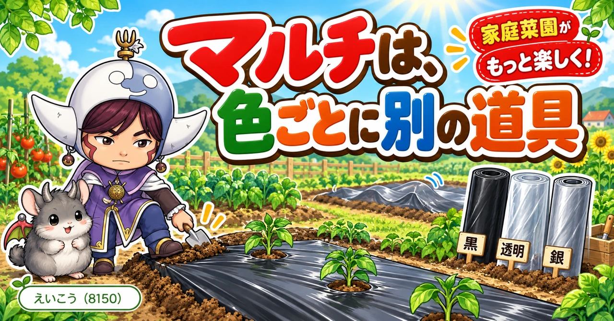
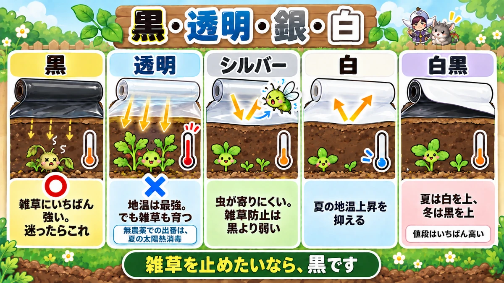
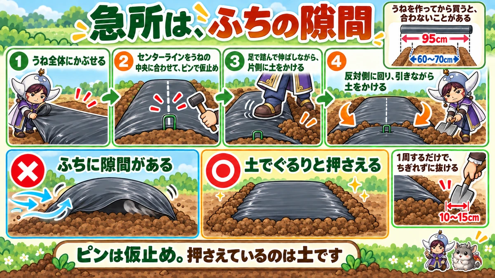

マルチの選び方と張り方｜色・植え穴・暑さ・撤去の判断ガイド

どうも、8150（えいこう）です🌱 家庭菜園歴8年、理科の教員免許を持っていて、有機・無農薬で野菜を育てています。
📖 この記事の目次
この記事で分かること
- 草取りの手間を減らしたいなら、見た目の色に加えて『光を通すか』を確認します。
- 黒は寒い時期の土を温める用途に向きますが、残暑の苗には熱が負担になることがあります。
- 白黒や銀色は反射を利用する選択肢。銀色でも、裏面や遮光性が違う製品を同じ扱いにしません。
- 張るときは、うねの形と幅を整え、端を土に埋めて風の入り口を閉じます。
- 張ったあとは、植え穴の草、シートの下に取り残された芽、葉が触れる場所を見回ります。
- 外す時期や再利用は作物と作業で決定。普通のフィルムを土へ混ぜ込むことはしません。
マルチ選びは『草を抑えたい』『土を温めたい』『暑さを抑えたい』を分けるところから始めます。全部まとめて「とりあえず黒にしよ！」と進めると、草取りは楽になったのに苗が暑そう、ということが起きるんですよね。
マルチングは土の表面を覆う作業のこと。このページでは、土に張るフィルムと、わら・草を敷く方法を扱います。野菜の上にかぶせる資材とは、まず置く場所を分けてください。土を覆ったからといって、葉のまわりまで同じ温度になるわけではありません。
これから準備するみなさんは、次の早見から。すでに張って困っているなら『失敗の見分け方』へ進んでください。知りたいのが色の違いだけなら、作業手順の最初と『説明が分かれていること』で整理できます。畑で判断するためのページなので、初めから最後まで覚え込まなくて大丈夫です☺️
早見：マルチの選び方・張り方（ひと目で分かる数字）
数字を使う前に、何の幅かを確かめる
- 張る季節：全国共通の月は決められません。植える作物の適期に合わせ、寒さ対策か暑さ対策かを選びます。秋冬野菜でも、植える時点に残暑があるかで黒の使い方が変わります。
- フィルムとうね幅：幅95cmのシートに、うね幅60〜70cmを組み合わせる説明があります。これは一つの組み合わせで、すべてのシートが95cmという意味ではありません。
- 端の埋め方：裾を約10cm土へ埋める説明があります。幅選びとは別の作業目安です。うねの高さや側面、端を収める場所まで見て余裕を取ります。
- 植え穴の間隔：15cm間隔の穴あき、15cmと30cmを選べるミシン目入りの製品例があります。穴の間隔をそのまま全野菜の株間にしないでください。
- 自由に穴を開ける場合：30cmや50cmおきに開ける使い方もあります。これは間隔を選べるという例で、育てる野菜に合わせて配置を決めます。
- 張ってからまくまで：早まきトウモロコシでは、土を温めるために1〜2週間置く方法があります。どの苗も植え付け前に同じ期間待つ、という決まりではありません。
- 芽出しの見回り：穴なしで覆うじゃがいもでは、芽を見つけて外へ出す作業が必要です。植えて何日目なら必ず出る、という共通日数は置きません。
- 葉が触れる熱：シート表面が40〜50℃になることもある、という説明があります。材料での注意喚起であり、全製品の実測値や苗が焼ける境界の数字ではありません。
- 元肥の準備：土に混ぜる作業は、覆う前に済ませる段取りにします。種類と量は作物・土・製品の条件から決め、マルチ用の共通配合は作りません。
- 追肥：張ったまま穴から行う方法と、めくって土寄せなどと一緒に行う方法があります。回数と時期は作物ごとに判断します。
- 収穫までの日数：マルチだけから計算できません。早く育つ例があっても、収穫日を一律に何日短縮できるとはしません。
- 連作の間隔：覆っても作物の種類や前作の履歴は変わりません。この材料には、マルチ使用で連作の間隔を何年短縮できるという根拠はありません。
『95cmのシートだから、95cmのうねが作れる』と考えたくなりますよね。でも、シートは上面だけでなく、左右の斜面を通って端を固定するところまで必要です。幅を全部上面に使うと、端を埋める余白がなくなります。ここは買う前に確認したいところです。
例えば、上面だけ測って合うつもりで購入しても、高いうねにすると側面の分が足りなくなります。反対に、シートに合わせてうねを狭くしすぎると、予定していた植え方に合わないこともあります。『野菜の配置』『うねの形』『シートの幅』を一緒に決めましょう。
買う前に見る表示
色、穴の配置、幅は別々の項目です。黒を選んだら穴も都合よく並んでいる、とは限りません。店頭では次の項目を順番に見れば、あれこれ迷う時間を減らせます。
- 土を温めたいか、暑さを抑えたいかを決めた
- 光を通すか、遮るかを製品の説明で確認した
- 白黒・銀黒なら、表と裏の向きを確認した
- 幅に、側面と埋める端の余裕を含めた
- 穴の間隔と列数が、予定する植え方に合っている
- 収穫後に回収する素材か、別の扱いが指定された素材かを確認した
説明には『白』『シルバー』と短く書かれることがあります。白い表面と黒い裏面を持つ製品と、白いだけの製品は、光の通り方まで同じとは限りません。銀色も同様です。色を覚えるより、いま手に取ったものの裏面を確認する方が確実です。
厚さや耐用年数については、ここで一律のおすすめ数字を足しません。色の比較を、材質や寿命の比較へ広げないためです。長い栽培に使うなら、その期間と作物に使える製品かを表示で確かめてください。
作業の手順（時期の順）
1．目的を一つ決め、色と仕様を選ぶ
- 植える野菜と、植える時点の暑さ・寒さを確認します。
- いちばん困っていることを『草』『乾燥』『低温』『高温』から選びます。
- 温める方向で考えるなら黒や透明、昇温を抑える方向なら白黒や銀色を候補にします。
- 透明は草取りが必要になることを、銀色は遮光性が製品で違うことを確認します。
- 虫への反射効果を期待する場合も、見回りを続ける計画にします。
寒い土を温めたいとき、透明には利点があります。ただ、光が土へ届くので草も育ちます。草取りを減らしたい家庭菜園では、温度と遮光を合わせて考えられる黒が候補になります。「温まりやすい方が上位」という順位づけでは、あとから必要な作業が抜けてしまうんですよね。
暑い時期に向けた白黒は、白い面で光を反射し、黒い裏面で光を遮るものです。両面の役割が違うため、向きまで確認します。シルバーも反射を利用しますが、反射による虫対策と防草の性能は同じ項目ではありません。
草取りを引き受ける余裕がないのに透明を選ぶ、虫が来なくなるつもりで銀色を選ぶ。この二つは、作業の見積もりがずれやすい組み合わせです。いま困っていることを解決しながら、何の見回りが残るのかまで決めておきましょう。

2．張らない選択肢と、途中の作業も考える
- マルチなしで管理する場合の草取り、乾燥対策を考えます。
- 栽培の途中に土寄せがあるか確認します。
- 土へ水を与える場所と、追肥のために触る場所を予定します。
- 張る方法を採るなら、いつめくるか、最後にどう回収するかも決めます。
マルチは使えると便利ですが、野菜を育てるための必須品とは限りません。秋冬は使わず育てる考え方もあります。資材費を抑えるだけでなく、土へ直接作業できるという違いがあります。逆に、草取りの時間を減らしたい、乾燥を抑えたいという目的があるなら、使う価値が出てきます。
とくに土寄せをする作物では、張ることだけ考えていると、途中で「あ、土を動かしたいのに覆ってるわ」となりがちです。めくる作業を予定しておけば大丈夫。収穫まで触らない作物と同じ張りっぱなしの計画にしないことがコツです。
3．覆う前に土とうねを整える
- 土づくりと、必要な元肥の作業を先に済ませます。
- 上面の幅だけでなく、高さと左右の斜面を含めて形を確認します。
- シートが浮きやすい凹凸を整えます。
- 完全に乾いた土で形が崩れる場合は、水を与えて整えやすくする方法を検討します。
- 端を土で埋められる場所を、うねの周囲に確保します。
乾燥した土に張れば、その後は勝手に適度な水分になる、というわけではありません。マルチは水分の蒸発を抑える道具で、水を作る道具ではないからです。張る直前に土の乾き方を見ておくと、あとから全体をめくり直す作業を減らせます。
ただし、どんな土にも水をまいてから張るという決まりにはしません。材料にある散水は、完全な乾燥や、土がこぼれて形を整えにくい場合の操作です。すでに湿っている土へ、同じように追加する必要があるとは限りません。
端の固定用に土を動かす作業と、根が育つ上面を踏み固める作業も分けます。張ったあとに押さえるのは裾の固定部分。見た目を平らにするために、植える場所を歩き回る段取りにはしないでください。
4．中央を合わせ、仮止めで位置を決める
- シートをうね全体へ広げ、左右の余りを確認します。
- 中央の目印がある製品なら、うねの中央に合わせます。
- ピンやレンガを使って、作業中にずれないよう一時的に押さえます。
- 対角側も押さえ、片側だけに引き寄せないように位置を直します。
- 長いうねでは、途中の位置も押さえながらしわを伸ばします。
一度に片側を全部埋めてしまうと、反対側に回ったとき幅が足りなくても直しにくくなります。最初は位置を決めるための固定にとどめ、左右を確認してから進めましょう。レンガを使う方法では、四隅を押さえる例があり、長さに応じて途中にも置きます。
ピンを刺した時点で、完了した気分になりやすいんですよね。でも、ここはまだ仮止めです。点で押さえた間に風が入る隙間が残っていれば、シートは持ち上がります。ピンの本数を増やす前に、次の裾の処理へ進みます。
温かい時間に張り、シートの伸縮を見込む説明もあります。これは張り具合の話。暑い時間に苗まで植えるよう勧めているわけではありません。土を覆う日と、苗を植える時間帯は分けて計画できます。
5．四辺を土で固定し、風の入り口をなくす
- 片端を押さえながら、裾へ土を戻します。
- 反対側に回り、軽く張りを整えてから端を埋めます。
- 両側と長さ方向の端まで、隙間が続いていないか確認します。
- 固定した土を押さえ、シートが引き抜けない状態にします。
- 最後に一周し、片側だけ余りが大きくなっていないか見ます。
裾を約10cm埋める目安もあります。ここで大切なのは、数字を写して深さだけ合わせることより、うねの形に沿って端が収まり、風が入り込む口を残さないことです。製品の幅とうねの高さが合っていなければ、無理に引っ張るほど端が足りなくなります。
張りを出すことと、破れるまで強く引くことは別です。しわが残る原因が土の凹凸なら、シートだけ引っ張っても解決しません。うねの形、中央の位置、左右の固定を順番に見直します。ほんま地味な作業ですが、植えたあとに張り直すより楽です。
レンガで仮止めした場合は、土で固定できたところから外します。レンガを置いたままだから安心、という終え方にはしません。四辺を処理しておけば、張る作業中の重しと、栽培中の固定の役割を分けられます。

6．野菜の配置を決めてから穴を開ける
- 必要な株間と、何列で植えるかを決めます。
- 穴あきの場合は、既存の穴を全部使う必要があるか確認します。
- ミシン目入りなら、使う場所だけを開けます。
- 穴なしなら、印をつけて専用の穴あけ道具などで開けます。
- くり抜いたフィルム片を回収し、植え穴の土を整えます。
穴あきは、細かい間隔でたくさん植えるときに作業を減らせます。穴なしは、自分の植え方に合わせて位置を決められます。ミシン目入りは、間隔を選びながら手で開けられる製品例です。いずれも、製品が決めた位置と野菜に必要な場所が一致するかを先に見ます。
15cm刻みの製品でも、隣り合う穴をすべて使わず、30cm間隔にする使い方があります。『穴が余るともったいない』と野菜を詰め込まなくてOKです。道具に植え方を決めてもらうのではなく、植え方に道具を合わせます。
加熱して穴を開ける操作も材料にはありますが、道具の仕様や持ち手の熱を確かめていないまま再現する手順にはしません。家庭菜園では、穴あき製品やミシン目入り、加熱しない専用道具から選べます。穴をたくさん開けたいという目的なら、まずこの選択肢で考えましょう。
7．植えたら、葉とフィルムの接触を確認する
- 苗を植え、根鉢と周囲の土の隙間を整えます。
- 外側の葉が垂れたとき、シートに触れる位置を見ます。
- 接触しそうなところに土を置くなどして、熱い面へ直接触れないようにします。
- 植え穴の縁と、葉や茎の位置も確認します。
- 張り終えた面の美しさより、苗が接触せず育てる状態を優先します。
植え付け直後の葉は、最初は立っていても垂れることがあります。その先に日なたのシートがあると、葉が熱い面に触れて傷む場合があります。葉が触れるところへ土を置く操作は、この接触を避けるための予防です。すでに傷んだ葉が必ず治る方法ではありません。
土を置くなら葉の下の接触しそうな部分を見ます。苗全体を土に埋める意味ではありません。きれいに張れたシートに土が乗ると、ちょっと惜しい気持ちになるかもしれませんが、ここは苗の都合を優先しましょう。
8．芽出しは、穴のある場所だけを見ない
- 穴なしで育てる作物では、シートを持ち上げる芽の位置を探します。
- 芽の近くを必要な範囲で開き、外へ出します。
- 同じ植え場所の周囲に、別の芽が取り残されていないか確認します。
- 穴あきのニンニクでも、穴からずれて出た芽を探します。
- 芽が出そろうまで、穴だけでなく周囲のふくらみも見ます。
穴なしで覆うじゃがいもでは、保温を利用する代わりに芽出しの作業が加わります。株間を目印に探せますが、芽は必ず印の真下に出るとは限りません。一つ見つけたら終わりにせず、その周囲も見る必要があります。
ここで行うのは、芽を外へ出すための局所的な開口です。シート全体を撤去する話とは分けます。最初から穴がある製品でも、芽がその穴へきちんと出るとは限らないので、見回りは省けません。
9．途中の追肥・土寄せに合わせて覆いを調整する
- 作物の生育段階を確認し、土を動かす作業が必要か判断します。
- 追肥用の穴から行う場合は、植え穴と混同せず、作業後の穴を処理します。
- 土寄せでめくる場合は、固定した場所を外してから動かします。
- めくったあとは、保湿と草対策をどう続けるか決めます。
- わらや草、再配置するフィルムを使う場合も、次の見回りができる形に整えます。
里芋には、フィルムをめくって作業し、外したものを両側へ置き直す例があります。覆う場所を変えれば、土へ水を与えたり、土寄せをしたりする場所を残せます。ただし、切ったシートが新品と同じ耐久になるわけではありません。飛ばない固定まで一緒に考えます。
肥料の名称や量を別の作物の手順から持ってくる必要はありません。『マルチに穴を開けて作業できる』ことと、『その肥料をその量で使う』ことは別の判断です。穴の扱いだけを参考にし、施肥は育てている作物の計画へ戻しましょう。
10．草を敷くときは、持ち込むものを選ぶ
- 草を刈って利用する場合は、種がついていないか確かめます。
- 根付きの草をそのまま置き、再び根づくことがないか注意します。
- 夏の高温・乾燥対策なら、土の表面やフィルムの上へ敷く方法を検討します。
- 発芽や初期生育が遅い作物、これから土寄せをする場所には、無条件に敷きません。
- 敷いたあとも、野菜の株元や次の作業場所を見られるようにします。
わらや草は、フィルムを使わない方法にも、使っているフィルムの上へ重ねる方法にも登場します。日差しを土やシートへ直接当てにくくし、乾燥を抑える目的です。銀色の反射による虫対策まで同じ効果になる、と考える必要はありません。
畑の草を役立てられると片づけも楽になりますが、種のついた草をよその場所から運べば、そこへ種も運びます。資材代がかからないことだけで決めず、中に何が含まれているかを確認しましょう。敷く厚さに、すべての野菜へ通じる共通数字は置きません。
11．栽培を終えたら、回収か継続使用かを決める
- 破れと埋まった端、残っているピンの位置を確認します。
- 回収する場合は固定を外し、土に残す破片を増やさないようにめくります。
- 次作も使う場合は、穴の配置と時期が次の野菜に合うかを調べます。
- 裂けたシートは、そのまま使える前提で引っ張り直しません。
- 普通のフィルムと、土への混ぜ込みが指定された資材を分けて扱います。
収穫後の玉ねぎのシートを残し、次の作付けへ使う例があります。張り替えを省ける方法ですが、どの作物にも同じ穴や同じ色が合うとは限りません。前作のために選んだ条件を、次作の前にもう一度確認してください。
撤去は勢いで引っ張るより、固定した場所を見つけてから進めます。ピンごと引き抜こうとして破片やピンが土に残れば、あとから探す仕事が増えます。張る段階で仮止めと本固定を分けておくと、最後の回収も考えやすくなります。
失敗の見分け方（症状→原因→やること）
張ったあとに困ったら、まず『どこで起きているか』を見ます。草なら穴か全面か。葉の傷みなら接触した部分か株全体か。場所を分けると、色の選択と張り方のどちらを見直すかが分かりやすくなります。
透明の下で、草が一面に育っている
- 症状：シートの下が緑になり、草が伸びています。
- 考えられる原因：土へ光が入るので、透明に防草の役割まで求めた計画が合っていません。
- やること：作物を傷めずに草を管理できるか確認します。次に張るときは、保温の必要性と草取りの負担を比べ、遮光する製品も候補にします。
透明で覆えば、雨や乾燥への働きはあっても、光を遮る働きはありません。草が育っただけで不良品と決めるのは早いです。栽培中に草が育つ話と、真夏の高温を利用した土の処理の話も分けてください。透明なら一年中草が枯れる、というものではありません。
黒なのに、植え穴と端から草が出る
- 症状：覆われた面は落ち着いているのに、穴の縁や裾だけ草が伸びます。
- 考えられる原因：穴やめくれた端へ光が入り、覆っていない部分が残っています。
- やること：植え穴の草を野菜と見分けて取り、浮いた端を固定し直します。穴を大きく広げる前に、作業に必要な範囲か確かめます。
『黒なら草取りゼロ』と思うと、残った小さな作業が気になるんですよね。でも、光が届かない面と、植えるために開けた場所の条件は違います。全面を張り替える前に、草が集中する場所を見てください。局所的な管理で済むかを判断できます。
銀色の下からも草が伸びる
- 症状：シルバーを選んだのに、内側で草が育っています。
- 考えられる原因：製品がある程度光を通す、穴や破れから光が入るなど、遮光の条件がそろっていません。
- やること：裏面と透光性の説明を確認し、草の出ている位置を調べます。防草を優先する次の栽培では、遮光性が確認できる仕様を選びます。
銀色は反射の特徴を示す呼び方です。裏が黒いタイプの説明と、光を多少通すタイプの説明を混ぜると、製品の働きを見誤ります。虫対策を期待できることと、草を抑えることは、別々に確かめましょう。
風でふくらみ、端が何度もめくれる
- 症状：風が吹くとシートが持ち上がり、しわやばたつきが増えます。
- 考えられる原因：裾が浮いて風が入り、ピンなどの点の固定だけで支えている状態です。
- やること：風の入り口を探し、端を土へ収めて押さえます。中央のずれや幅不足があれば、仮止めまで戻って位置を直します。
めくれた角へピンを足すだけでは、その隣の隙間から風が入ることがあります。見る順番は『入り口』『埋める余裕』『固定』です。シートが大きく裂けていれば、土をかけ直すだけで元の状態になるとは考えず、使い続けられるかを確認します。
植えた苗の葉が、触れた部分だけ傷む
- 症状：日なたのシートに接した葉の一部が、乾いて枯れたようになります。
- 考えられる原因：熱い表面との接触による傷みが候補です。症状だけで病気や水不足をすべて除外することはできません。
- やること：接触している場所を確認し、土を置くなどして直接触れない状態にします。新しい葉や株全体の様子も見ます。
葉の予防操作を、傷んだ苗の治療へ置き換えないでください。土を置けば枯れた葉も戻る、とは言えません。回復率や植え替えまでの日数の共通基準は材料にないため、被害を広げない確認と、その後の生育の観察を分けます。
暑い時期に、黒を張った苗が弱っている
- 症状：残暑の植え付け後に苗がしおれ、葉の接触だけでは説明しにくい状態です。
- 考えられる原因：土やシート周辺の高温が負担になっている可能性があります。乾燥など、ほかの条件も同時に確認します。
- やること：土の水分と接触箇所を見て、温める目的がいまも適切か考えます。次の準備では、白黒や草を敷く方法など、暑さを抑える方向も比較します。
秋冬野菜という名前だけでは、植える日の温度は分かりません。冬の寒さを見越した黒が、植え付け直後の暑さには合わないこともあります。水だけを足し続ける前に、覆いの目的が現在の条件と合っているかへ戻りましょう。
芽が出ないと思ったら、シートがふくらんでいる
- 症状：表に芽が見えず、植え場所の近くに盛り上がりがあります。
- 考えられる原因：下で伸びた芽が、穴の位置からずれたり、穴なしのシートに遮られたりしています。
- やること：芽の位置を確かめて必要なところを開き、外へ出します。周囲に別の芽が隠れていないかも見ます。
予定した一点だけを探すと、ずれた芽を見落とします。ニンニクの穴あき栽培にも、穴から外れた芽を出す説明があります。『穴ありだから大丈夫』とせず、穴とその周囲をセットで見ることが必要です。
土が乾いているのに、表のシートはぬれている
- 症状：覆いの上に水がある一方、植え穴から確認した土は乾いています。
- 考えられる原因：水が土へ届いていない、張る前から土が乾いていたなど、保湿以前の水分の不足が考えられます。
- やること：表面の見た目だけで決めず、植え穴などから土の水分を確認します。作物に合う場所へ水が入るようにします。
保湿は、ある水分を失いにくくする働きです。雨のあとでも、覆いの上を流れた水が、根の使う土へ十分に入ったとは限りません。『今日は雨だから水分はあるはず』を一度外し、土そのものを見てください。
栽培の途中なのに、フィルムが裂けてきた
- 症状：地際などから破れ、覆いが続かなくなっています。
- 考えられる原因：張り方や素材、使用条件が候補です。生分解性の資材には早期に破れた個別の報告もありますが、原因を一つへ断定できません。
- やること：素材の表示と破れの範囲を確認します。飛び散る破片を回収し、残す部分と覆い直す部分を判断します。
紹介時の利点と、実際に途中で破れた結果は両方見る必要があります。「分解する素材なら、何もしなくてええか」とはしません。必要な栽培期間を覆えるか、片づけをどうするかまで製品ごとに確認しましょう。
説明が分かれていること
同じ色の評価が分かれていても、どちらかを間違いにする前に条件を比べます。『いつ』『何を』『どの製品で』『どう植えたか』をそろえると、違いの理由を考えられます。違う条件の結果を平均して、一つの万能な使い方にしないことが大切です。
秋冬野菜には黒を使うか、残暑は控えるか
- Aという説明：冬へ向かう栽培では、黒を使って寒さに備えることを重視します。
- Bという説明：8月下旬〜9月の残暑に植える場合、黒による高温を警戒して控えます。秋冬はマルチなしでもよく、費用面を評価する説明もあります。
- どう考えればよいか：収穫する季節と、植える季節を分けます。冬に育てる作物でも、植える日に暑いなら低温対策だけでは決められません。
これは、黒が有用か不要かを決着させる話ではありません。草取りや肥料の流れを抑える目的もあれば、資材費を抑えて直接土を管理する目的もあります。寒さ、残暑、管理できる時間を比べて選びましょう。
透明は冬の栽培用か、夏の土の処理用か
- Aという説明：冬から春に収穫する大根で、土を温めるために透明を使う例があります。栽培中には草の手入れも必要になっています。
- Bという説明：草を抑える薬剤を使わない栽培では、透明を主に真夏の太陽熱を利用した土の処理へ使う説明があります。
- どう考えればよいか：目的と時期が違います。冬の保温と夏の処理を同じ効果として読まず、栽培中に光を通す場合の草管理も引き受けられるか考えます。
冬の大根での例を、ほかの野菜へそのまま広げることも避けます。逆に、夏の処理に使う説明があるから冬の利用は全部誤り、とする必要もありません。育てる期間の温度と、土を処理する期間の温度を区別してください。
シルバーは光を遮るか、草が育つか
- Aという説明：表が銀色で裏が黒の製品を取り上げ、反射と遮光を説明します。
- Bという説明：シルバーでも多少光を通し、草が入るという説明があります。
- どう考えればよいか：呼び名より仕様を見ます。裏面の色と透光性が一致していなければ、同じ製品の性能を比べていることにはなりません。
みなさんが買うときにも「銀色でした」だけで情報を終えないでください。反射を重視するのか、防草も必要なのかを表示と照らします。虫が少なかった例がある一方、虫がついた例もあるので、銀色を完全な防虫の囲いのようには扱いません。
春じゃがいもで黒がよいか、白黒がよいか
- Aという説明：春植えの比較で黒を評価し、その結果を暑い秋植えにはそのまま当てはめていません。
- Bという説明：別の比較では、穴を開けずに植えた白黒で収穫量が多かったという結果があります。
- どう考えればよいか：色のほかに、植え方、畑、製品、季節の条件が違います。この二例から、全国共通で最も多収になる色を決めることはできません。
収穫量だけを並べると順位表を作りたくなりますが、同じ条件の試験ではないものを一つの順位へまとめると、意味が変わります。自分の栽培では、初期の寒さを補いたいのか、後半の暑さを抑えたいのかから選びます。
じゃがいもの覆いは外すか、上から草を重ねるか
- Aという説明：暑くなる時期に、マルチを撤去して管理する方法があります。
- Bという説明：フィルムを残し、その上にわらや草を敷いて日差しへの対策をする方法があります。
- どう考えればよいか：覆いを残す理由と、その後の土の管理を比べます。全体の撤去と、芽を出すための部分的な穴あけを混同しません。
透明の上掛けを追加し、芽を見つけてからその透明だけを外す例もあります。そこで外したのは追加した覆いです。黒い土のマルチまで全部撤去したと読み替えないでください。『外す』と聞いたら、どの層を外すのかまで確認します。
生分解性なら、撤去の問題は解決するか
- Aという説明：使用後に指定された扱いで土へ混ぜ込める資材として、撤去の省力化を評価します。
- Bという説明：別の使用例では、栽培途中から分解や破れが始まったと報告しています。原因は考察で、確定していません。
- どう考えればよいか：使い終わって分解する利点と、栽培中に覆ってほしい期間を分けます。名前だけで、使用期間や片づけ方を決めません。
普通のフィルムも一緒に混ぜ込める、という意味にはなりません。使う製品の扱いを確認する必要があります。早く破れた一例を、すべての生分解性製品の寿命として扱うことも避けましょう。
よくある質問
初めてなら、黒を買えばよいですか
草取りを減らし、寒い時期の土を温めたいなら候補になります。
残暑の苗や暑い時期の栽培では、温める働きが負担になることもあります。
最初に植える時期と目的を確認してから選びましょう。
白と白黒は同じものですか
白い表面だけでは同じと言えません。
白黒は、白い面の反射と黒い裏面の遮光を組み合わせたものです。
手元の製品の裏面と、光の通し方を確認してください。
穴あきは、全部の穴へ植えてよいですか
必要な株間に合う場合だけ使います。
細かい穴を一つおきに利用する方法もあるので、空いた穴を全部埋めるために植える必要はありません。
野菜の配置を先に決めると迷いにくいです。
穴なしなら、芽を放っておいても破って出ますか
じゃがいもなどの穴なし栽培では、芽を見つけて外へ出す管理を予定します。
芽が下に取り残されると傷むことがあるため、勝手に出る前提にはしません。
一つ出したあとも周囲を見てください。
風対策はピンを増やせば十分ですか
点で固定するだけでは、間から風が入ることがあります。
裾を土に埋め、四辺に浮いた入り口を残さない張り方を先に見直します。
幅やうねの形が合わない場合は、位置合わせへ戻りましょう。
透明を使えば、草も熱で枯れますか
栽培中の透明は光を通すため、草が育つ場合があります。
真夏の太陽熱を利用した処理とは、温度も目的も違います。
透明を選ぶなら、草取りも計画に含めてください。
シルバーなら、虫の確認はいりませんか
反射によって寄りつきを抑えることを期待する資材です。
虫がついた例もあり、あらゆる虫をゼロにするものではありません。
葉裏などの見回りは続けます。
張ったあとは水やり不要ですか
乾燥を抑えても、水そのものを補給する働きはありません。
張る前の乾きや、その後に土へ入る水も確認が必要です。
シートの上がぬれているかより、根のある土の状態で判断します。
どのくらい厚く草を敷けばよいですか
この材料では、全作物共通の厚さを決められません。
発芽の邪魔にならないか、土寄せができるか、持ち込む草に種がないかを先に確かめます。
厚くすることだけを目標にしないでください。
家にある紙くずを代わりに使えますか
紙くずを使った比較例はありますが、素材やインクなどを確認できていません。
その例だけから、どんな紙でも土へ敷いたり混ぜたりできるとは言えません。
身近な材料でも、中身が分かることと栽培に使えることは別です。
プランターでも、この幅と張り方を使えますか
ここで扱った幅と埋め方は、畑のうねを対象にした例です。
容器には同じ裾を埋める場所がないので、その数字をそのまま当てはめません。
この材料だけで、容器用の共通手順や寸法は決められません。
収穫後のシートは必ず交換しますか
状態がよく、次作の穴の配置や季節にも合うなら、継続して使う例があります。
破れ、前作の状況、次の土の作業を確認して判断します。
再利用を先に決めて、合わない植え方へ野菜を合わせることは避けましょう。
学ぶ：マルチのしくみ🔬
まとめ
黒マルチ
いちばん使うのがこれです。草を抑えて、地温を上げて、乾燥も防ぎます。


シルバーマルチ
夏用です。光を反射するので地温が上がりすぎず、アブラムシも寄りにくくなります。
![[商品価格に関しましては、リンクが作成された時点と現時点で情報が変更されている場合がございます。]](https://hbb.afl.rakuten.co.jp/hgb/55e77bb2.a973bab2.55e77bb3.28befe28/?me_id=1223148&item_id=10001699&pc=https%3A%2F%2Fthumbnail.image.rakuten.co.jp%2F%400_mall%2Fideshokai%2Fcabinet%2Fam425.jpg%3F_ex%3D240x240&s=240x240&t=picttext "[商品価格に関しましては、リンクが作成された時点と現時点で情報が変更されている場合がございます。]")
透明マルチ
地温を最も上げます。ただし草も生えるので、太陽熱消毒と組み合わせて使います。
![[商品価格に関しましては、リンクが作成された時点と現時点で情報が変更されている場合がございます。]](https://hbb.afl.rakuten.co.jp/hgb/5676ec31.2582035e.5676ec32.c4887243/?me_id=1296241&item_id=10004946&pc=https%3A%2F%2Fthumbnail.image.rakuten.co.jp%2F%400_mall%2Fotentosan%2Fcabinet%2Fimg%2Fgoods02%2Fmulti%2Ftoumei-multi_pb.jpg%3F_ex%3D240x240&s=240x240&t=picttext "[商品価格に関しましては、リンクが作成された時点と現時点で情報が変更されている場合がございます。]")
マルチ押さえ
裾が浮くと風で全部めくれます。ケチらずに多めに打つのがコツです。

あわせて読みたい